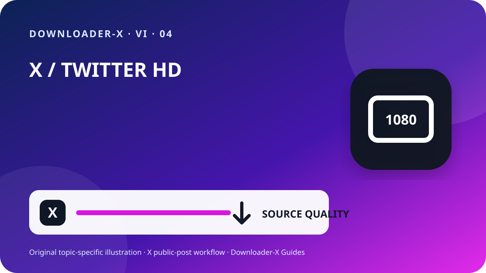

Trả lời nhanh
trình tải video twitter hd — Mở bài đăng X riêng lẻ có chứa video, xác nhận bài đăng có thể xem công khai, rồi dùng menu Chia sẻ để sao chép liên kết bài đăng. Dán URL đó vào Downloader-X, chọn một biến thể MP4 thực sự được hiển thị và phát lại tệp sau khi lưu để kiểm tra hình ảnh lẫn âm thanh. Chỉ áp dụng quy trình này với video của bạn, nội dung có giấy phép phù hợp hoặc media đã được chủ sở hữu cho phép. Việc xử lý liên kết công khai không cần mật khẩu X, mã xác minh, cookie trình duyệt hay quyền điều khiển từ xa.

Ba bước với Downloader-X
- Liên kết đầu vào phải trỏ tới đúng một bài đăng chứa video. Trong X, mở menu Chia sẻ và chọn sao chép liên kết bài đăng, sau đó mở liên kết một lần trong tab mới để kiểm tra đích đến. URL hồ sơ hoặc dòng thời gian có nhiều bài đăng nên không xác định được video cần xử lý. Bước kiểm tra nhỏ này giúp phân biệt lỗi liên kết với lỗi dịch vụ và tránh tạo nhiều tệp dở dang do nhấn lặp lại.
- Dán URL đã kiểm tra vào trình tải X và chỉ bắt đầu xử lý một lần. Chờ các tùy chọn thật xuất hiện, rồi so sánh tiêu đề hoặc bản xem trước với bài đăng gốc. Chỉ chọn định dạng và độ phân giải được hiển thị rõ trong kết quả. Không coi lời hứa 4K, 1080p hay không watermark là đúng nếu nguồn không cung cấp biến thể đó. Khi thất bại, hệ thống đáng tin cậy phải báo lỗi rõ ràng, không được gửi trang HTML, trình cài đặt hoặc tệp sai rồi gọi đó là video thành công.
- Công việc chỉ hoàn tất khi tệp mở được như một video thật, không phải khi thanh tiến trình biến mất. Hãy kiểm tra trước khi lưu trữ hoặc chia sẻ:
Ý nghĩa thực tế của từ khóa
trình tải video twitter hd. Chỉ hỗ trợ bài đăng công khai. Định dạng và chất lượng phụ thuộc vào lựa chọn thực tế từ nguồn.
4. Chọn HD theo nguồn và mục đích
Nhãn HD chỉ có giá trị khi nó đến từ biến thể thực sự có trong bài đăng công khai. Trên điện thoại và laptop, 720p thường cân bằng tốt giữa độ nét, dữ liệu và dung lượng; 1080p phù hợp với màn hình lớn khi nguồn thật sự cung cấp. Hai tệp cùng độ phân giải vẫn có thể khác bitrate, codec và mức nén, vì vậy cần phát thử thay vì chỉ nhìn tên tệp. Nếu âm thanh quan trọng, hãy chọn tùy chọn kết hợp video và audio hoặc kiểm tra ngay sau khi lưu rằng bản nhạc mong đợi có mặt.
6. Xác minh tệp đã lưu
Công việc chỉ hoàn tất khi tệp mở được như một video thật, không phải khi thanh tiến trình biến mất. Hãy kiểm tra trước khi lưu trữ hoặc chia sẻ:
Loại tệp đúng với lựa chọn, chẳng hạn MP4, không phải HTML hay bộ cài.
Dung lượng không bằng 0 và hợp lý với thời lượng cùng chất lượng.
Phát đoạn đầu, giữa và cuối để kiểm tra hình, thời lượng và âm thanh.
Tên tệp, thư mục, URL nguồn và quyền sử dụng đã được ghi lại.
5. Lưu trên iPhone, Android, Windows hoặc Mac
Trên iPhone và iPad, tệp tải bằng Safari thường nằm trong ứng dụng Tệp, thư mục Downloads hoặc vị trí đã cấu hình. Trên Android, kiểm tra danh sách tải của trình duyệt hoặc ứng dụng Files. Trên Windows, macOS, Linux và ChromeOS, hãy xem thư mục Downloads cùng lịch sử trình duyệt trước khi nhấn lại. Nếu thiếu dung lượng, xóa bản sao không cần thiết hoặc chọn độ phân giải thấp hơn. Không cài trình quản lý tải xuống không rõ nguồn chỉ vì một trang nói rằng đó là yêu cầu bắt buộc.
Ghi lại nguồn trước khi lưu lâu dài
Với dự án có nhiều clip, hãy ghi tài khoản, ngày đăng, URL cố định, mô tả ngắn, biến thể đã chọn, kích thước tệp và cơ sở cho phép. Hồ sơ này ngăn tệp bị mất nguồn và giúp xem lại credit hoặc giấy phép sau này. Trong bài trích dẫn, trả lời hoặc chuỗi bài, hãy sao chép URL của bài đăng thực sự chứa video, không phải bài chỉ nhắc hoặc trích dẫn nội dung đó.
Khắc phục từ nguồn tới tệp
Quay lại bài đăng video và sao chép URL bằng Chia sẻ; hồ sơ không xác định một media cụ thể.
Nội dung có thể được bảo vệ hoặc giới hạn. Không chia sẻ thông tin đăng nhập hay cookie; hãy xin bản sao được phép.
Xác nhận bài đăng còn tồn tại, có video gốc và mở được bằng URL đã sao chép, rồi làm mới một lần.
Xóa tệp đó, không đổi phần mở rộng, rồi kiểm tra lại URL và tùy chọn video thật.
Kiểm tra bài gốc, âm lượng thiết bị và một trình phát tin cậy khác; chọn biến thể có audio nếu cần.
Bảo mật và quyền riêng tư
Luồng liên kết công khai không cần mật khẩu X, mã hai lớp, cookie xuất ra, điều khiển từ xa, tệp thực thi hoặc việc tắt bảo vệ thiết bị. Hãy dừng nếu trang cung cấp .exe, .dmg hoặc tiện ích trình duyệt không liên quan. Trước khi mở, kiểm tra miền, loại tệp và nguồn tải. Trên thiết bị dùng chung, di chuyển tệp được phép khỏi thư mục công cộng và xóa các bản tạm không còn cần thiết.
1. Kiểm tra trạng thái công khai và quyền sử dụng
Hãy bắt đầu từ bài đăng gốc thay vì hồ sơ, trang tìm kiếm, ảnh chụp màn hình hoặc bản xem trước được chuyển tiếp. Mở URL trong tab mới và đối chiếu tài khoản, nội dung, hình thu nhỏ cùng thời lượng. Bài đăng công khai chỉ cho biết khả năng truy cập hiện tại, không tự động cho phép đăng lại, chỉnh sửa, bán hoặc dùng trong quảng cáo. Nếu tài khoản được bảo vệ, bài đăng đã bị xóa, yêu cầu quyền truy cập đặc biệt hoặc bị giới hạn, hãy dừng lại và xin bản sao được ủy quyền từ chủ sở hữu thay vì tìm cách vượt qua kiểm soát.
Hiển thị công khai là cài đặt truy cập, không phải giấy phép sử dụng. Chỉ lưu video của bạn, media có giấy phép tương thích hoặc nội dung có sự cho phép rõ ràng. Muốn đăng lại, chỉnh sửa hoặc dùng thương mại, hãy xác nhận quyền đó nằm trong phạm vi cho phép và giữ bằng chứng bằng văn bản. Tôn trọng người xuất hiện trong clip, thông tin riêng tư, địa điểm nhạy cảm và trẻ vị thành niên, đồng thời không nhận tác phẩm của người khác là của mình.
2. Sao chép đúng URL của bài đăng
Liên kết đầu vào phải trỏ tới đúng một bài đăng chứa video. Trong X, mở menu Chia sẻ và chọn sao chép liên kết bài đăng, sau đó mở liên kết một lần trong tab mới để kiểm tra đích đến. URL hồ sơ hoặc dòng thời gian có nhiều bài đăng nên không xác định được video cần xử lý. Bước kiểm tra nhỏ này giúp phân biệt lỗi liên kết với lỗi dịch vụ và tránh tạo nhiều tệp dở dang do nhấn lặp lại.
Mở bài đăng video gốc và chuyển tới trang bài đăng riêng lẻ.
Dùng menu Chia sẻ để sao chép liên kết, không tự gõ URL.
Kiểm tra miền x.com hoặc twitter.com và URL phải trỏ tới bài đăng.
Mở trong tab mới rồi đối chiếu tài khoản, nội dung, hình thu nhỏ và video.
Lưu URL nguồn cùng bằng chứng cho phép bên cạnh tệp đã tải.
3. Dán liên kết và chỉ chọn kết quả thực
Dán URL đã kiểm tra vào trình tải X và chỉ bắt đầu xử lý một lần. Chờ các tùy chọn thật xuất hiện, rồi so sánh tiêu đề hoặc bản xem trước với bài đăng gốc. Chỉ chọn định dạng và độ phân giải được hiển thị rõ trong kết quả. Không coi lời hứa 4K, 1080p hay không watermark là đúng nếu nguồn không cung cấp biến thể đó. Khi thất bại, hệ thống đáng tin cậy phải báo lỗi rõ ràng, không được gửi trang HTML, trình cài đặt hoặc tệp sai rồi gọi đó là video thành công.
Sắp xếp tệp và tránh trùng lặp
Đặt tên gồm chủ đề ngắn, tài khoản, ngày và chất lượng, ví dụ topic_creator_2026-08-30_720p.mp4. Tách thư mục tạm khỏi thư mục đã xác minh và chỉ giữ các biến thể cần thiết. Nhấn nhiều lần không tăng chất lượng mà thường tạo bản trùng hoặc tệp một phần. Lưu URL nguồn, credit và điều kiện sử dụng trong ghi chú hoặc bảng tính của cùng dự án.
Danh sách kiểm tra 60 giây cuối
Bài đăng công khai mà không cần vượt kiểm soát truy cập.
Bạn sở hữu hoặc được phép lưu video.
Dịch vụ không yêu cầu thông tin đăng nhập hay cookie.
Chất lượng đã chọn xuất hiện trong kết quả thật.
Loại và kích thước tệp hợp lý.
Câu hỏi thường gặp
trình tải video twitter hd?
Chỉ hỗ trợ bài đăng công khai. Định dạng và chất lượng phụ thuộc vào lựa chọn thực tế từ nguồn.
Bài công khai có thể đăng lại ngay không?
Không. Bạn cần giấy phép hoặc quyền cho phép phân phối lại và mục đích sử dụng.
Làm gì khi nhận tệp HTML?
Xóa tệp, không đổi đuôi và kiểm tra lại URL cùng tùy chọn video.
Có dùng được cả liên kết x.com và twitter.com không?
Có, nếu chúng mở cùng một bài đăng công khai và bạn đã kiểm tra đích đến.
Có thể tải từ tài khoản được bảo vệ không?
Không. Hướng dẫn này chỉ dành cho bài công khai và không hỗ trợ vượt hạn chế.
Hướng dẫn X liên quan
Dùng đúng liên kết bài đăng công khai
Chỉ hỗ trợ bài đăng công khai. Định dạng và chất lượng phụ thuộc vào lựa chọn thực tế từ nguồn.
Mở Downloader-X